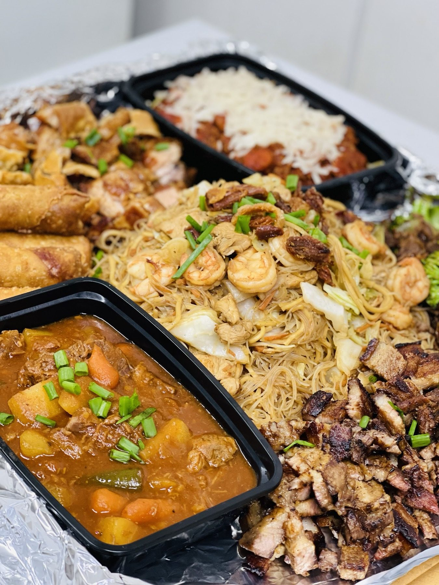

Turo-turo plates
Filipino and Asian dishes set out fresh. Point to what you like and we serve it into your to-go container.
Filipino and Asian dishes set out fresh from 10:30 AM, plus burgers, brisket and cakes.

Where to find us
3982 IN-46, Nashville, IN 47448
Mon ClosedTue 10:30 AM–3 PMWed 10:30 AM–3 PMThu 10:30 AM–3 PMFri 10:30 AM–3 PMSat 7:30 AM–4 PMSun 7:30 AM–3 PM
DirectionsTuro-turo style
Come on by
Seating is limited, so come at slower hours or plan for takeout. Closed Mondays.
What folks come for
Filipino plates, American favorites and cakes, made to order or set out fresh.
Filipino and Asian dishes set out fresh. Point to what you like and we serve it into your to-go container.

Ube, coconut and lemon chiffon cakes from Ginger, light, soft and beautifully decorated. Send inspiration pictures.

A halo-halo with a lot going on, and worth it. Tip: eat the flan pieces before you mix.

Tax included. See the menu board photo for current prices


4.7 ★ · 253 Google reviews
Delicious food! My first time trying Filipino cuisine. Highly recommend! I will be back! Great selection of dishes. The Halo Halo seems like a little too much when you consider all the ingredients, but it is totally worth it! So yummy! Eat the pieces of flan before you mix the Halo Halo. The flan is out of this world! I went for my birthday lunch and it was the perfect meal!
Ordered a lemon chiffon cake from Ginger and it is the best cake ever. It is light and full of flavor without being overly sweet and beautifully decorated. We will be ordering this cake for every celebration moving forward. Thank you, Ginger.
I ate the Pork Adobo and Beef brisket sandwich - both were made fresh, full of flavor, nice and hot and just fantastic! I highly recommend this stop when in the Nashville, IN area. Super good!
Meet the crew
A white trailer with a red roof, a Philippine flag and an American flag out front, and picnic tables nearby.
Turo-turo means you point and we spoon it into your container. We cook from 9 AM on weekdays and refill as items run low.